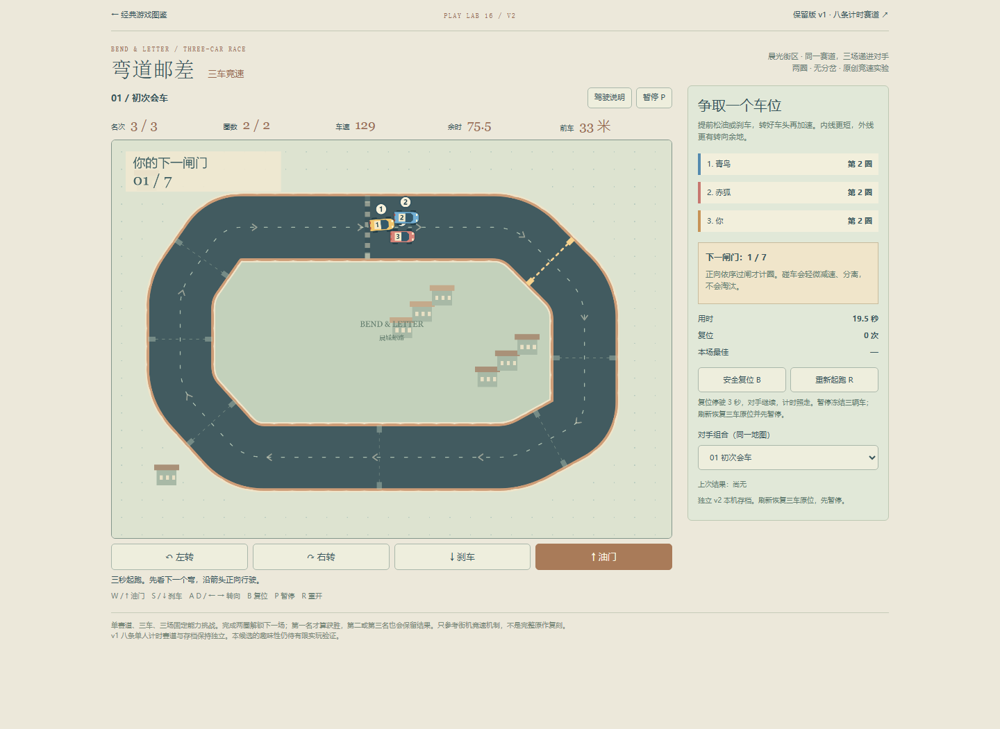
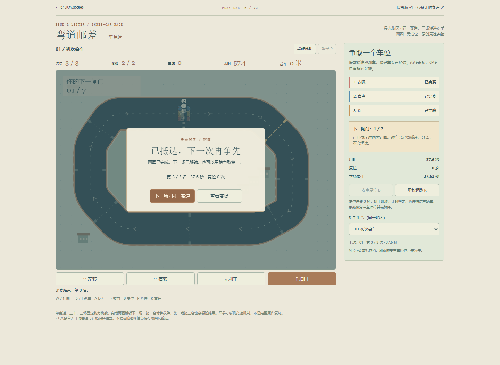
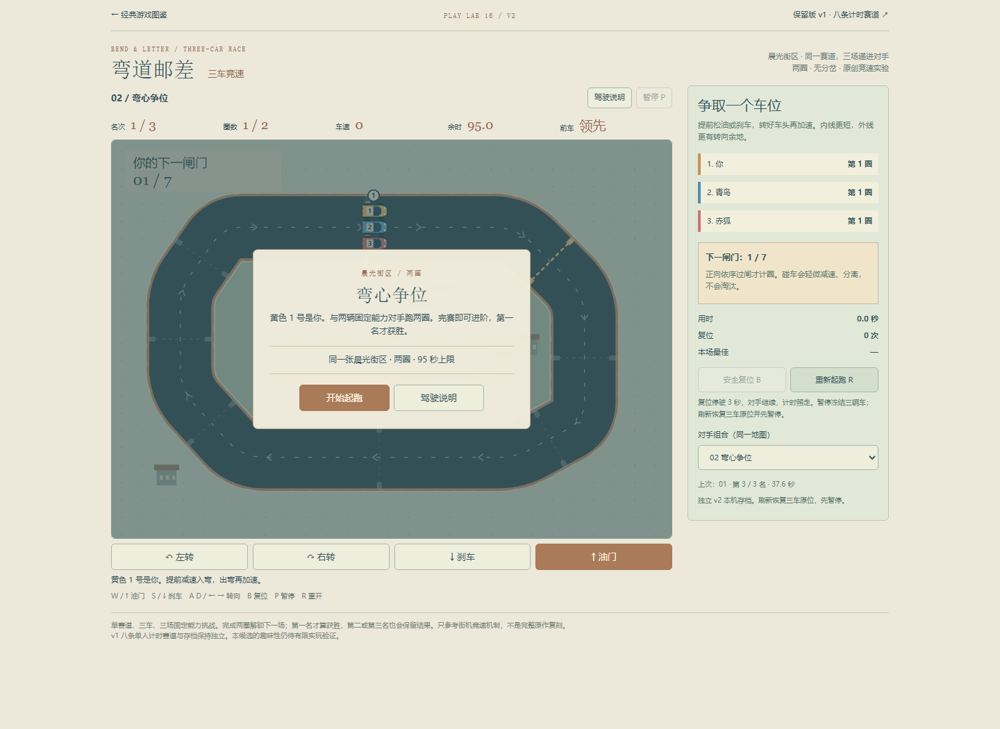

弯道邮差 · 两圈完赛与进阶
普通键盘、脚本辅助追线，37.62秒合法完成16闸/两圈，0复位。第三名，未获胜；按原规则完赛即可解锁第二场。刷新纪录、重起和第二场初态均通过。未改游戏。
方法与限制 · 实际UI · 分开的模型参考 · 打开游戏
second-lap-running.png
two-lap-finish-result.png
finish-refresh-records-kept.pngsecond-stage-clean-ready.png